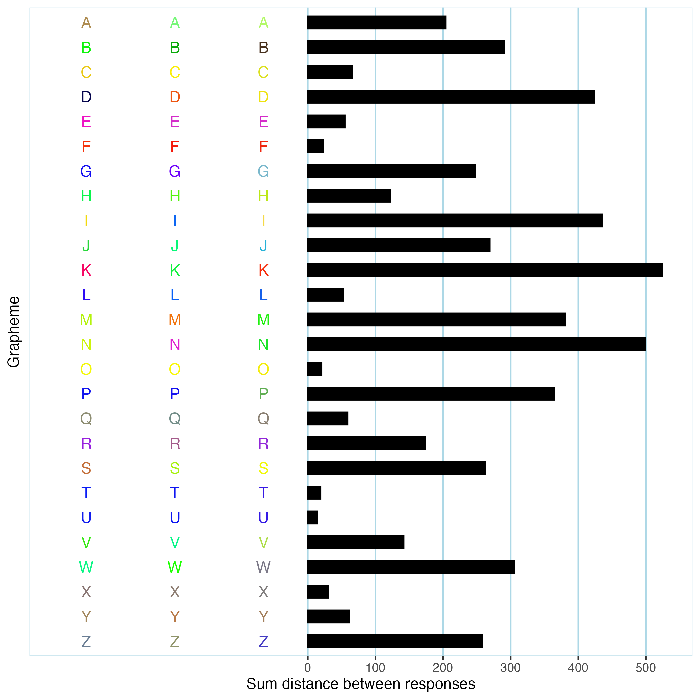

This is an R package for working with data resulting from grapheme-color synesthesia-related consistency tests. synr provides tools for exploring test data, including visualizing a single participant’s data, and applying summarizing functions such as calculating color variation/consistency scores or classifying participant data as valid or invalid.
Installation
synr is available on CRAN, meaning you can simply:
install.packages('synr')Note that this will also install packages that synr depends on unless you already have them (dbscan, data.table and ggplot2).
Usage
Once data are in an appropriately formatted data frame/tibble (‘long format’ - see vignettes for more information), everything starts with rolling up participant data into a ‘ParticipantGroup’ object with create_participantgroup_widedata:
library(synr)
pgroup <- create_participantgroup(
formatted_df, # data frame/tibble to use, with data in 'long format'
n_trials_per_grapheme=3, # number of trials that grapheme was used for
participant_col_name="participant_id", # name of column which holds participant ID's
symbol_col_name='symbol', # name of column which holds grapheme symbol strings
color_col_name='color', # rname of column which holds response color HEX codes
color_space_spec = "Luv" # color space to use for all calculations with participant group
)Using the resulting object (pgroup), you can call various methods. A few examples follow.
Example group-level method: get_mean_consistency_scores
pgroup$get_mean_consistency_scores(symbol_filter=LETTERS) would return a vector of CIELUV-based consistency scores, using only data from trials involving capital letters.
Example group-level method: check_valid_get_twcv_scores
pgroup$check_valid_get_twcv_scores(symbol_filter=0:9) would return a data frame which describes classifications of all participant data, where each data set is classified as ‘invalid’ or ‘valid’, based largely on DBSCAN clustering. This may be used to identify participants who varied their responses too little, e. g. by responding with an orange color on every trial.
Example participant-level method: get_plot
pgroup$participants[[1]]$get_plot(symbol_filter=LETTERS) would produce a bar plot of per-grapheme consistency scores for a single participant, using only data from trials involving capital letters. You can see an example below.

Detailed usage information
More details on required data format and how to use the above functions and more can be found in the package’s vignettes, some of which are also included in the package itself (run help(synr) to find them). Additional information is available in the following article:
Wilsson, L., van Leeuwen, T.M. & Neufeld, J. synr: An R package for handling synesthesia consistency test data. Behav Res 55, 4086–4098 (2023). https://doi.org/10.3758/s13428-022-02007-y
Feedback
If you have any suggestions on improvements you are very welcome to directly raise issues or commit code improvements to the github repository at https://github.com/datalowe/synr.